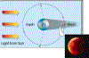
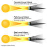
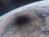
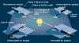
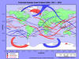

Solar eclipse
- Every planetary body casts a shadow. This shadow becomes evident when it
falls on another planetary body. When we find ourselves in the shadow of the
Moon, we experience the so-called solar eclipse. A shadow cast by the Earth
on the Moon is called a lunar eclipse.
- Like all planetary shadows, the moon's shadow is made up of two parts
called the umbra and penumbra. The umbra is the conical portion of the
shadow which excludes all light from from the Sun. The penumbra is that part
of the shadow which surrounds the umbra and allows part of the sun's light
to be visible. This
short video describes the various shadows.
- A total solar eclipse, or totality, occurs when
the Moon's umbra reaches the surface of the Earth during the day. Because the umbra never
covers more than a relatively small section of the Earth's surface, totality
at a given location on Earth is considered a rare event.
- For those observers who find themselves in the umbra, the Sun's ghostly outer atmosphere, or
corona, becomes
visible as an irregularly shaped halo surrounding the blotted-out disk of
the Sun. In addition, during the seconds or minutes of totality, the sky is
sufficiently dark that stars and planets become visible. Mercury is perhaps
more commonly seen at total eclipses than at other times, when it is never
far from the horizon at sunset or sunrise.
- A partial solar eclipse occurs when only a
portion of the Sun's face is covered because the observer is in the
penumbra.
- An annular eclipse is a special type of
partial solar eclipse in which only an outer ring ("annulus") remains
unblocked. In this case,
the Moon is at or near apogee (far point in its orbit), and so is too small
to cover the Sun. No corona is seen in this case because even the small amount of the Sun
still visible completely overwhelms the corona's faint glow.
- Total solar eclipses are rare events. Although they occur somewhere on
Earth every 18 months on average, it has been estimated that they recur at
any given place only once every 370 years, on average. One of the reasons
that total solar eclipses are rare is that although the penumbra is some
7000 kilometers across, the umbra is always very small. Even under the most
favorable circumstances, its diameter never exceeds 270 kilometers.
- Because
the shadow sweeps across Earth's surface at speeds of 1700-8,000 km/h
(depending on latitude), the total eclipse lasts no more than a few
minutes at a given location, with a maximum duration of about 7.5 minutes.
As the moon begins to uncover the surface of the sun, the eclipse proceeds
through partial phases for approximately an hour until the sun is once again
completely uncovered.
- Eclipse darkness was famously used in 1919 and 1922 to test Einstein's
general theory of relativity, which predicted that the sun's mass would
apparently bend light (by warping space) enough to displace slightly the
positions of stars near the sun. During the 1919 eclipse, the sun
fortuitously was located in a cluster of stars during totality. When the
results became known, Einstein immediately gained his lasting fame with
scientists and with the public. His prediction has been better verified by
other means in recent years, though, so eclipses are no longer used for
testing relativity.
- This site
shows a list of eclipses at various times all over the world. The next total
solar eclipse over North America visits Mexico, the United States, and
Canada on April 8, 2024.
Lunar eclipse
- When the Sun and the Moon are in exactly opposite directions, as seen
from Earth, Earth's shadow sweeps across the Moon, temporarily blocking the
Sun's light and darkening the Moon. This phenomenon is known as a
lunar eclipse.
- Unlike the case for a solar eclipse, a lunar eclipse is simultaneously visible from all
locations on Earth's night side, not just in a narrow swath.
- From Earth, we see the curved edge of Earth's shadow begin to cut across
the face of the full Moon and slowly eat its way into the lunar disk.
Usually, the alignment of the Sun, Earth, and Moon is imperfect, so the
shadow never completely covers the Moon. Such an occurrence is known as a
partial lunar eclipse.
- Occasionally, the entire lunar surface is obscured in a
total lunar eclipse. Total lunar eclipses last only as long as is needed for the
Moon to pass through Earth's shadow—no more than about 100 minutes. During
that time, the Moon often acquires an eerie, deep red coloration—the result
of a small amount of sunlight that is refracted (bent) by Earth's atmosphere
onto the lunar surface, preventing the shadow from being completely black.
- While the penumbra is often sketched as uniform, in reality the penumbra
shades gradually from the completely dark umbra out towards the edges. The
reason is simple: as you move outwards away from the edge of the umbra, you
will see an increasing fraction of the Sun peeking out from behind the Moon,
as shown in this very nice Mir image of the
1999 Aug 11 eclipse shadow.



Line of Nodes
- An eclipse occurs when Earth, Moon, and Sun are precisely aligned. If
the Moon's orbital plane lay in exactly the plane of the ecliptic, this
alignment would occur roughly twice a month. However, the Moon's orbit is inclined
at about 5° to the ecliptic, so not all
configurations are actually favorable for producing an eclipse.
- For an eclipse to occur, the line of intersection of the two planes must
lie along the Earth-Sun line. Thus, eclipses can occur only at specific
times of the year. The two points on the Moon's orbit where it crosses the
ecliptic plane are known as the nodes of the orbit. The line joining them,
which is also the line of intersection of Earth's and the Moon's orbital
planes, is known as the line of nodes.
This
video
tutorial may help with the visualization of the different eclipses and
line of nodes.
- The Sun, Earth and nodes are aligned twice a year, and eclipses can
occur during a period of about two months around these times. There can be
from four to seven partial eclipses in a calendar year, which repeat according to
various eclipse cycles, such as the Saros cycle.
- Times when the line of nodes is not directed toward the Sun are
unfavorable for eclipses. However, when the line of nodes briefly lies along
Earth-Sun line, eclipses are possible. These two periods, known as
eclipse
seasons, are the only times at which an eclipse can occur.
- Notice that an eclipse season does not guarantee that an eclipse will
occur. For a solar eclipse, we must have a new Moon during an eclipse
season. Similarly, a lunar eclipse can occur only at full Moon during an
eclipse season. In practice, 2 lunar eclipses typically occur in most
calendar years. However, there can be up to 3 in a given year, or none at
all. Solar eclipses occur 2-5 times per year, although totality occurs only
once every 18 months on average.

Saros cycle
- The gravitational tug of the Sun causes the Moon's orbital orientation,
and hence the line of nodes, to change slowly with time. The result is that
the eclipse seasons gradually progress backward through the calendar,
occurring about 20 days earlier each year and taking 18.6 years to make one
complete circuit. This phenomenon is known as the regression of the line of
nodes and the cycle is called the saros cycle.
- The regression of the line of nodes of the Moon's orbit causes Earth's
rotation axis to wobble slightly, changing the angle between Earth's axis
and the ecliptic by plus or minus 9 arcseconds every 18.6 years. This
additional motion, which is superimposed on Earth's precession, is known as
nutation.
Frequency of eclipses
- The
number of solar eclipses (partial, annular or total) is 2-5 per
year. Total solar eclipses occur, on the average, about once every 18 months somewhere on
Earth and recur in the same place roughly once every 360 years.
- At any given location, up to 3 lunar eclipses can occur per per
year, but some years there may be none.
- Because we know the orbits of Earth and the Moon to great accuracy, we
can predict eclipses far into the future.
- The maximum number of eclipses (solar and lunar) that can occur in a year is 7,
but typically fewer occur.
- The last year with a total of seven eclipses in it was 1982. The next time
7 eclipses will occur in one year is 2038 (4
penumbral lunar eclipses and 3 solar eclipses).
